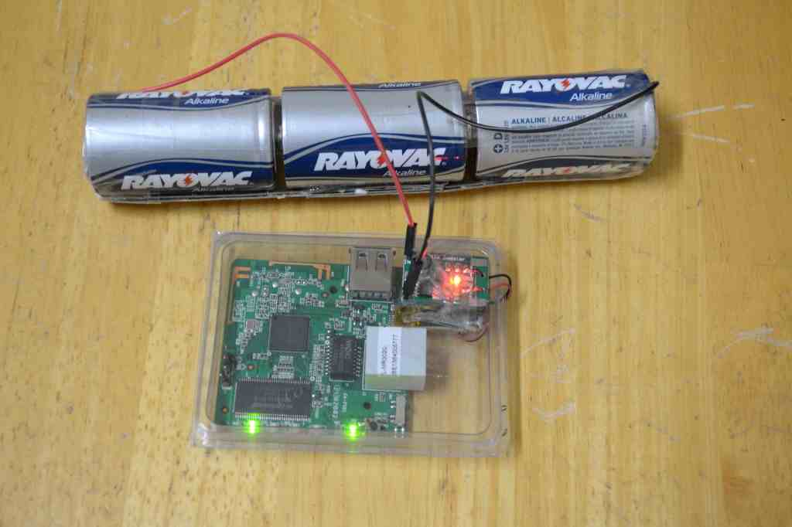
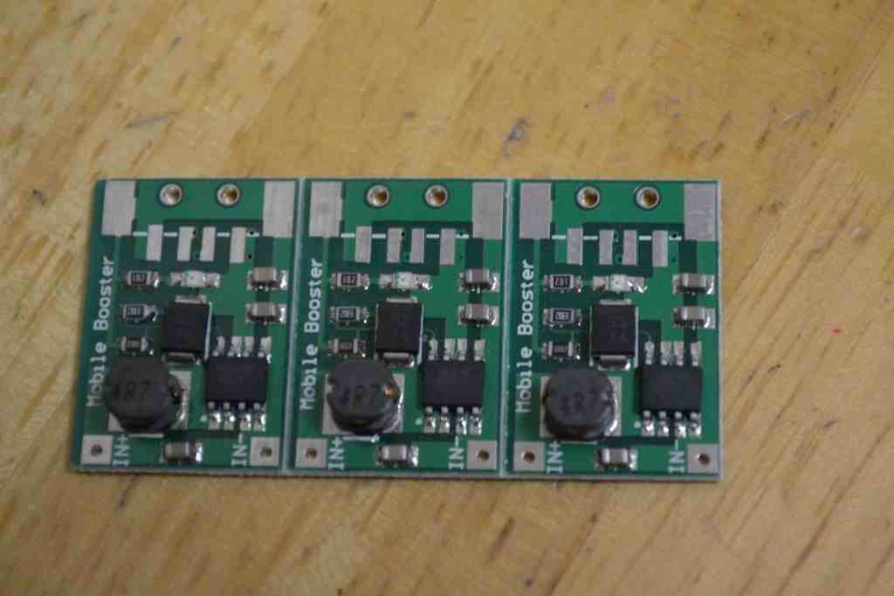

|| Disposable WLAN with DropAP, author: xor-function || 09/15/2014 || Back to main
Disclaimer: Mind your local laws, use discretion and common sense.
This is an idea I had for while since I have heard of the Pirate-box but while this serves it's intended purpose
I felt it fell short in some ways. The individuals sharing documents files etc... along with the devices administrator
need to be in the same place/time for this to work, plus the device has a persistent owner.
This were I felt it would be more interesting if the device in question was designed to be disposable. This way one
would be able to leave it at a designated location for other to use a "dead drop" if you will. The place where it deviates
from the norm is the method of the data is retrieved. This would take place over Wi-Fi, all one would have to do is just
be in range of the access point to connect to it and download the data. Therefore there would be no need to perform any
physical exchanges of items, no visible interaction between individuals.
So I created the following script below. It is specifically designed for the Tp link MR3020 so if you want to us
it for another platform you will have to tweak the script.
The code is available on github
https://github.com/xor-function/drop-ap
to get a copy
To grab the code:
git clone http://github.com/xor-function/drop-ap.git
The Power Source:
For this to be successful this would obviously require it own power supply this fact creates limitations but then
something that is disposable is also temporary.

The power supply pictured above are three D cells in series which should give me about 30 amp hrs at 4.5 vdc,
the output is regulated by a buck/boost circuit that cuts of at 2 vdc.
You can look for a step up voltage circuit similar to the one I used on ebay.

The MR3020 from my findings does not draw more than 500 ma of current when under full use. After testing out I was able to
run it for two days and still had some juice left in the D cells. This to me would be an acceptable window for retrieval.
Although if one needed more time all you would have to do to would be having two 3 D Celled in series connected in parallel to
double the usable amp hours giving you close to five days.
Plus the package wknock can be used to create a stealth ap which will only awaken the 802.11 radio from monitor mode once an
individual interrogates a known location with a specific ssid.